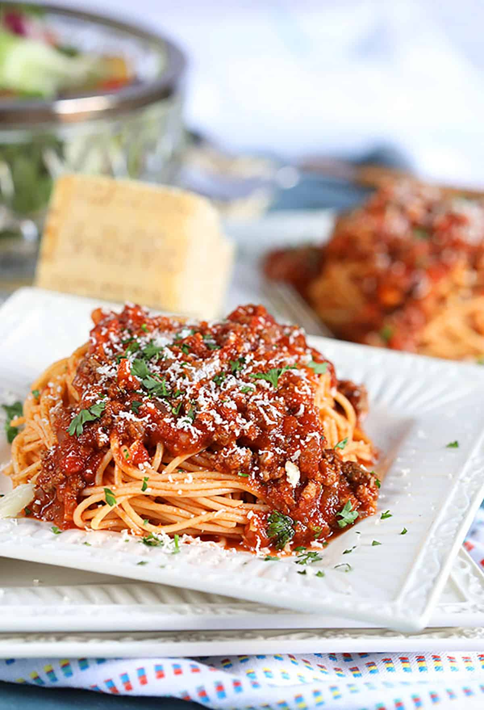

Bolognese Sauce

Always delicous always classic
Bolognese is a heary and rich meat sauce that is always packed with flavor. Layer in between sheets of pasta for lasagna or pasticho. Spoon over your favorite pasta or zoodles for an easy weeknight dinner as well. Usually I double the recipe and save 2 or 3 portions in the freezer its a great sauce to make ahead of time and safe for future uses. You can prepare so many dishes with this sauce. Toss with pasta, fill cannelloni, stuff vegetables like eggplants, peppers, or zucchinis, papas rellenas, or even empanadas.
Ingredients for bolognese
- 2 Tablespoons olive oil
- 1 medium onion (finely chopped)
- 4 cloves of garlic (finely chopped)
- 1 medium carrot (peeled and grated)
- 1 1/2lbs ground beef (low fat, 90-10 or 93-7)
- 1 Beef boullion cube
- 3/4 Cup red wine (omit if you want sub beef broth)
- 2 Tablespoons tomato paste
- 2 Cans of tomato sauce 8oz each
- 1 Can of petite diced tomatos 15.5oz can
- 3/4 Cup of beef broth
- 1 bay leaf
- 1 Tablespoon dry oregano
- 8 Fresh basil leaves (chopped)
Instructions
- Step One: Make the Bolognese sauce Heat olive oil in a large dutch oven (or large pot) on medium-high heat. Add the onions, garlic, and carrots. Cook until tender, 3-5 minutes. Add the ground meat and cook through, breaking into small pieces using a wooden spoon, but do not brown. Drain off any excess grease, if necessary. Add the beef bouillon and stir until completely dissolved. Season with pepper to taste. Stir in the wine and allow it to cook into the meat. about 3 minutes. Add the tomato paste and continue coking until the paste starts to toast, about 2 minutes. Note: At this point, you can transfer the meat to the slow cooker and finish it there. If using the slow cooker option let cook on low for 6 hours once all assembled in the cooker.
- Step Two: Add in the liquids and herbs Add in the diced tomato, the tomato sauce, beef broth, bay leaf, oregano, and basil. Mix to incorporate. Now bring to a simmer, then reduce to low and simmer covered for at least 1 hour up to 4 hours, stirring occasionally. The flavors will continue to mingle and develop the longer you allow the sauce to simmer, so if time is on your side simmer up to 4 hours. Note: After the first 30 minutes of simmering, taste and adjust the seasonings to your liking. Buen Provecho Enjoy!